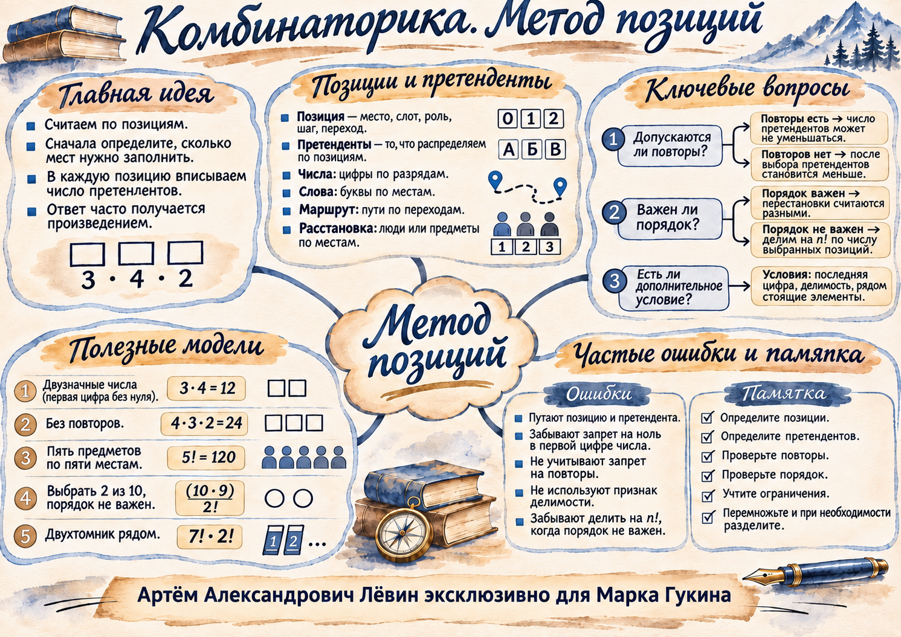

Повторы разрешены
На каждом шаге можно использовать уже выбранный элемент.
Четырёхбуквенные последовательности из трёх букв.
Математика / 13 ноября 2026 / занятие
Как посчитать количество вариантов, когда есть позиции, претенденты, ограничения и выбор без учёта порядка.
Позиция — место, которое нужно заполнить. Претендент — допустимый объект для данной позиции. Если выбор происходит последовательно, количество способов получают перемножением числа доступных вариантов на каждом шаге.
Первую позицию заполняют цифры 1, 2, 3. Во второй допустимы 0, 1, 2, 3. В коде с начальными нулями действуют другие условия.
| Ситуация | Что считаем позицией | Что распределяем |
|---|---|---|
| Число | Разряд | Цифру |
| Расписание | Время урока | Предмет |
| Призовые места | Золото, серебро | Команды |
| Маршрут | Этап пути | Дорогу |
На каждом шаге можно использовать уже выбранный элемент.
Четырёхбуквенные последовательности из трёх букв.
После каждого выбора число претендентов уменьшается.
Четыре различных человека на четырёх местах.
Для расстановки всех разных элементов используют факториал:
Золотое и серебряное места различны. Для двух призёров из десяти:
Просто пара из десяти участников. Любая пара ранее подсчитана два раза.
Для выбора группы из k различных объектов среди n различных объектов, без повторений и без учёта порядка:
Деление на факториал оправдано тогда, когда каждая группа из k различных элементов была подсчитана ровно k! раз. Например, выбор двух концов отрезка из 16 точек даёт 120 отрезков.
Если задача требует нечётности, кратности или соседства, сразу выделите позиции, на которые условие накладывает запрет.
| Условие | Первое действие |
|---|---|
| Настоящее многозначное число | Исключить начальный нуль. |
| Нечётное число | Последняя цифра — одна из 1, 3, 5, 7, 9. |
| Делится на 5 | Последняя цифра — 0 или 5. |
| Делится на 4 | Последние две цифры образуют число, кратное 4. |
| Две определённые книги рядом | Считать пару единым блоком и учесть порядок внутри блока. |
Например, при расстановке 8 разных книг, где две заданные книги должны стоять рядом, образуется 7 блоков, а внутри особого блока — два порядка:
Если среди цифр 1–6 использовать каждую ровно один раз, то шестизначных чисел, кратных 5, будет 120; кратных 4 — 192. Во втором случае последняя пара должна быть одной из восьми допустимых.

Решите каждую задачу, затем откройте краткий ответ. Полное пространство для решения предусмотрено в печатном чек-листе.
Сколько двузначных чисел составляется из цифр 0, 2, 4, 6, если повторения разрешены?
12
Сколько четырёхбуквенных последовательностей составляется из букв А, Б, В с повторами?
81
Из A в B ведут 5 дорог, из B в C — 3 дороги. Сколько маршрутов A → B → C?
15
Шесть разных учащихся становятся в очередь. Сколько различных порядков возможно?
720
Из 14 команд выбирают чемпиона и серебряного призёра. Сколько вариантов награждения?
182
Из 9 разных саженцев выбирают 3. Очередность не важна. Сколько существует троек?
84
Сколько шестизначных чисел имеют попарно различные цифры на позициях 2, 4, 6, а на нечётных позициях цифры произвольные?
648 000
Используя каждую цифру 1, 2, 3, 4, 5, 6 ровно раз, сколько шестизначных чисел будет кратно: а) 5; б) 4?
а) 120; б) 192.
На полке 8 различных книг; две определённые должны стоять рядом. Сколько возможных расстановок?
10 080
Отмечено 12 точек; никакие три не лежат на одной прямой. Сколько отрезков с концами в этих точках и сколько треугольников с вершинами в этих точках?
а) 66 отрезков; б) 220 треугольников.